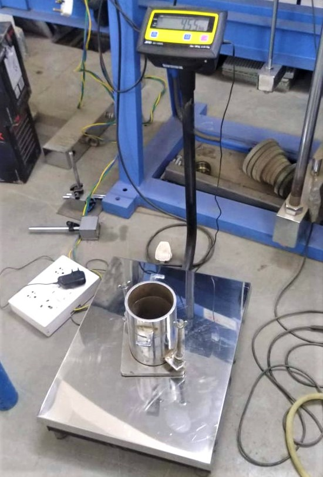

1. About 3 kg of air-dried soil from thoroughly mixed portion of material passing 425 micron I.S sieve is to be obtained.
2. Thoroughly mix the sample with sufficient water to dampen it to approximately four to six percentage.
3. Weigh the proctor mould without base plate and collar.

4. Fix the collar and base plate. Place the soil in the Proctor mould and compact it in 3 layers giving 56 blows per layer with the 4.89 kg rammer falling through.
5. Remove the collar, trim the compacted soil even with the top of the mould by means of the straight edge and weigh
6. Place the mould assembly with the surcharge weights on the penetration test machine.
7. Set the stress and strain dial gauge to read zero, turn on the machine and take the readings.